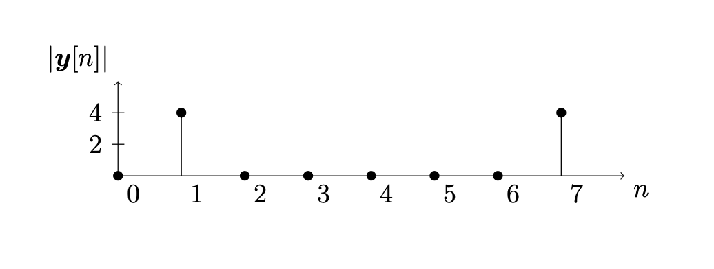
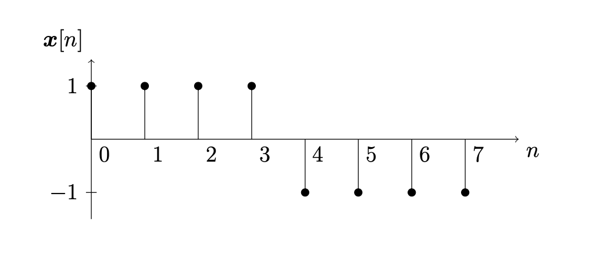
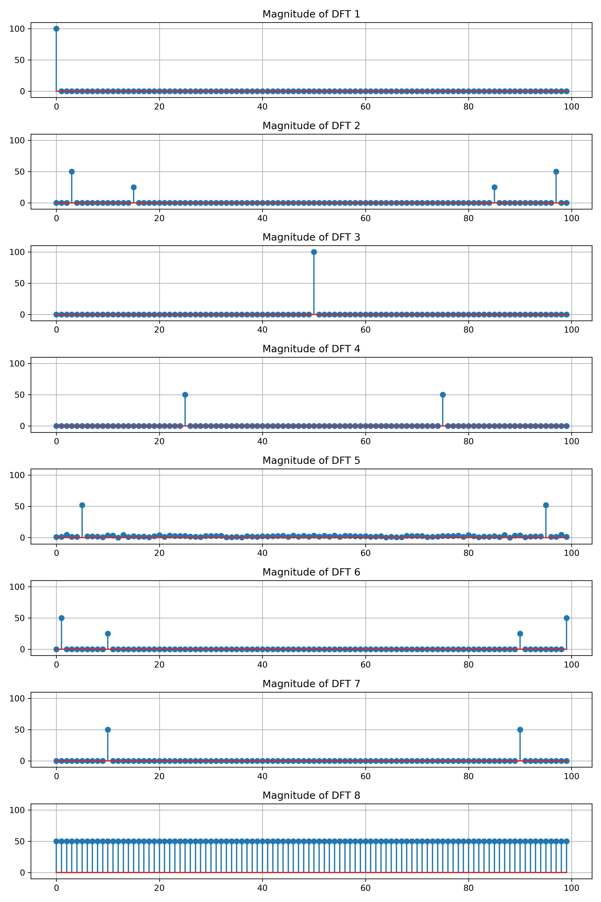
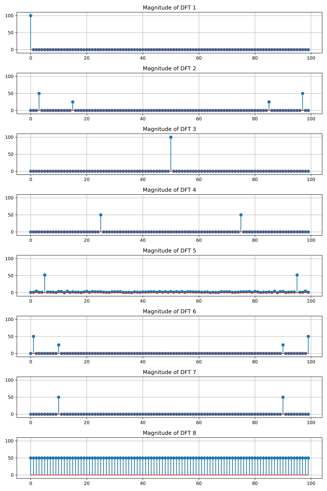

Frequency, Amplitude and Phase
Contents
Frequency, Amplitude and Phase#
The DFT of a signal computes the amplitude and phase of each frequency in the signal.
The DFT is used to study sound, images and any kind of information that can be represented by a vector \(\boldsymbol{x} \in \mathbf{C}^N\). Therefore, in the context of the DFT, we use the term signal to refer to a vector \(\boldsymbol{x} \in \mathbf{C}^N\) and we use the notation \(\boldsymbol{x}[n] = x_n\) to refer to the entries
Sinusoids#
Let \(N\) be a positive integer and let
A sinusoid is a signal of the form
where \(k\) is the frequency (in periods per \(N\) samples), \(A\) is the amplitude and \(\phi\) is the phase. Here we use vector notation
Let \(N = 8\) and so
Consider the signal
and sketch the signal as a stemplot

Now consider the signal
and sketch the signal as a stemplot

DFT of Sinusoids#
The Fourier basis vectors satisfy the following properties:
Proof. We showed in a previous proposition that
therefore
Further,
Therefore
The last equality is proved similarly.
Let \(\boldsymbol{x} = A \cos(2 \pi k \boldsymbol{t} + \phi)\). Then
Proof. We proved in a previous proposition
and we also showed that
Compute
Similarly, compute
Use the trigonometric identity
to find
Stemplots#
The magnitude stemplot of a complex vector \(\boldsymbol{y} \in \mathbb{C}^N\) is the plot of the magnitude \(| \boldsymbol{y}[n] |\) versus the index \(n\). The angle stemplot of \(\boldsymbol{y}\) is the plot of the argument \(\angle \boldsymbol{y}[n]\) versus the index \(n\).
Let \(N=8\) and compute the DFT of the sinusoid \(\boldsymbol{x} = \sin(2 \pi \boldsymbol{t})\). Since \(\boldsymbol{x} = \cos(2 \pi \boldsymbol{t} - \pi/2)\) we have \(A=1\), \(k=1\) and \(\phi = -\pi/2\), and so
The magnitude stemplot of \(\boldsymbol{y} = \mathrm{DFT}(\boldsymbol{x})\) is given by
{kind=link}
The angle stemplot of \(\boldsymbol{y} = \mathrm{DFT}(\boldsymbol{x})\) is given by

Let \(N=8\) and let
Sketch the signal
{kind=link}
What frequencies occur in this signal? Compute the DFT
The magnitude stemplot of \(\boldsymbol{y}\) is given by

The angle stemplot of \(\boldsymbol{y}\) is given by

Therefore we may rewrite the signal \(\boldsymbol{x}\) as a sum of sinusoids
where
Exercises#
Exercise 1. Find a formula for \(\boldsymbol{x}\) as a sum of sinusoids given
Exercise 2. Sketch the signal \(\boldsymbol{x}\) such that the magnitude and phase plots of \(\boldsymbol{y} = \mathrm{DFT}(\boldsymbol{x})\) are

Exercise 3. Run the following Python code for different values \(N\):
N = 100
x = np.random.rand(N)
y = np.fft.fft(x)
plt.stem(np.abs(y),use_line_collection=True)
plt.show()
Describe the magnitude plot and explain why it has the same general shape for each random sample. (Recall np.random.rand samples from the uniform distribution on \([0,1]\).)
Exercise 4. Match the signal with the magnitude plot of its discrete Fourier transform.
 

{kind=link}